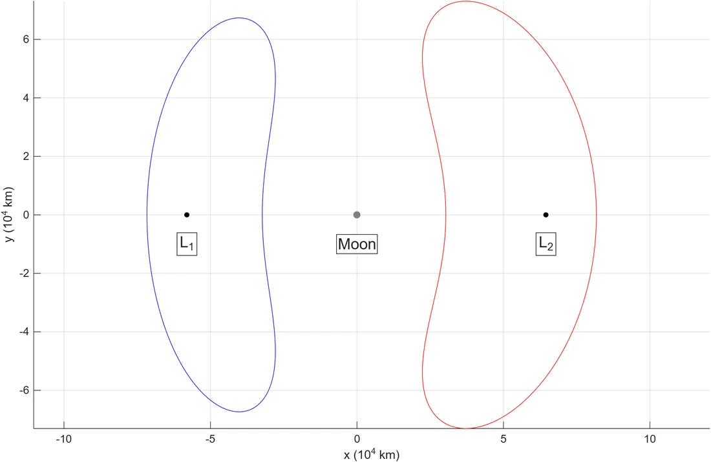
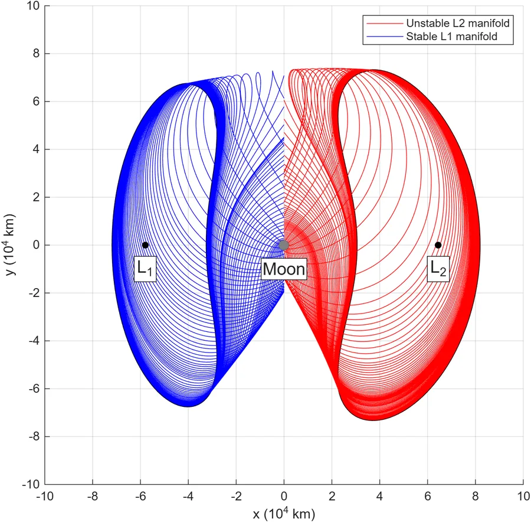
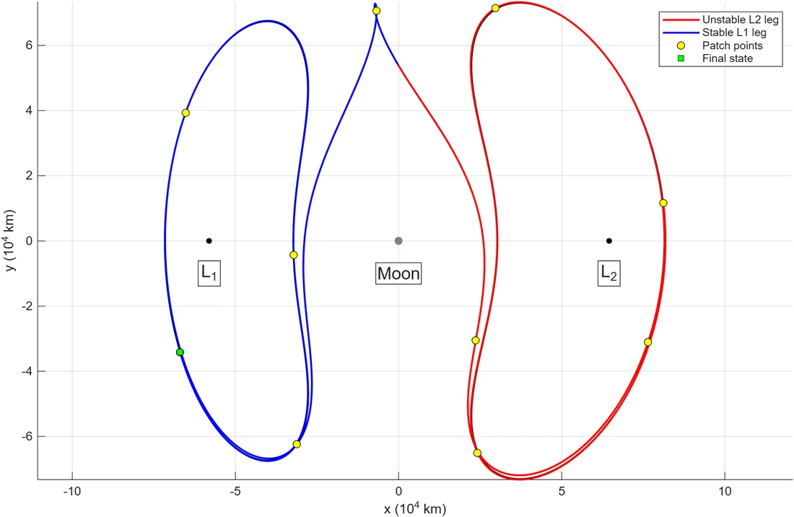
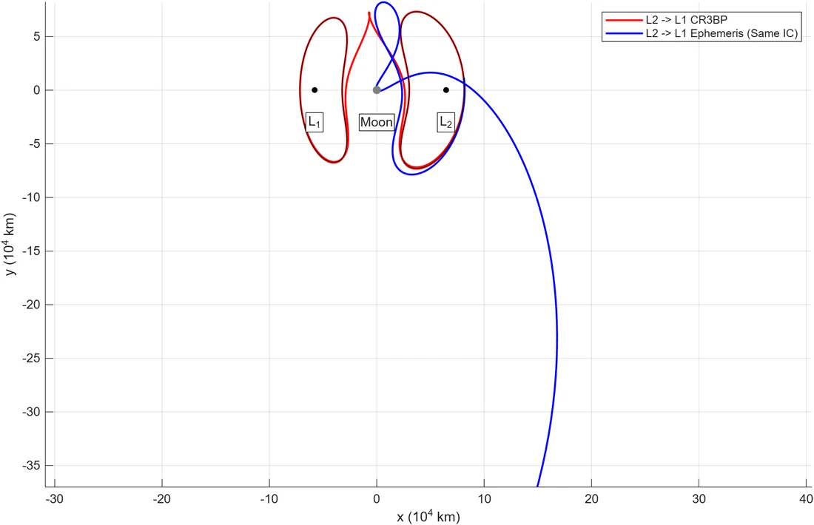

As part of a self-directed cislunar literature review, I worked through Pavlak's PhD thesis and built a transfer that carries a spacecraft from a periodic orbit around the Earth–Moon L2 point to one around L1 with no maneuver. The path is made almost entirely out of the dynamics themselves: it leaves L2 along that orbit's unstable manifold, passes the Moon, and arrives on L1's stable manifold.
Everything is solved in the circular restricted three-body problem (CR3BP) in MATLAB. The converged initial state is then sent through a SPICE ephemeris model, which shows how far the idealized solution is from flyable.
Two Orbits at One Energy
The endpoints are planar Lyapunov orbits around L1 and L2. A ballistic transfer conserves the Jacobi constant, so both orbits have to share one: I fixed C = 3.08 and corrected each orbit with single shooting. The method uses the orbit's symmetry about the x-axis: start perpendicular to the axis and iterate the initial x until the velocity is perpendicular again at the next crossing. Holding C fixed sets the initial vy from x, leaving a one-variable Newton problem driven by entries of the state transition matrix.
The converged orbits have periods of 14.2 days (L1) and 16.0 days (L2). The linearized dynamics matrix is derived symbolically, so the STM is integrated from the same equations as the trajectory.

The L1 (blue) and L2 (red) Lyapunov orbits at C = 3.08, in a Moon-centered rotating frame.
Following the Manifolds
Integrating the STM over one full period gives the monodromy matrix, whose eigenvalues describe what happens to a small deviation after one revolution. Each orbit has a dominant real pair: λ ≈ 880 for L1 and 578 for L2. A deviation along the unstable eigenvector grows by that factor every revolution, and the reciprocal eigenvalue gives the direction that decays.
I seeded 75 points around each orbit, carried the eigenvector to each point with the STM, nudged the state by about 0.4 km along it, and integrated. The L2 unstable manifold runs forward in time, and the L1 stable manifold runs backward, since it is the set of states that will arrive at the orbit. Every arc stops where it first crosses the plane through the Moon, which serves as the Poincaré section where the two families are compared.

Unstable L2 manifold (red) and stable L1 manifold (blue), each cut off at the Moon's x-plane.
Closing the Gap
Searching all 75 × 75 arc pairs at the section, the closest match still leaves a 727 km position gap and a 22.9 m/s velocity gap. Patching those two arcs together would cost a maneuver, so instead I used the pair as an initial guess. I placed 10 patch points along the combined path and ran multiple shooting, solving for every patch state at once so that each segment's end matches the next segment's start in position and velocity.
The system is underdetermined, so each update is the minimum-norm Newton step from the pseudoinverse. That keeps the solution close to the manifold guess instead of letting it wander off to some other transfer. The continuity error drops from 2.9e-2 to 7.6e-14 in five iterations. The result is a continuous 52.5-day transfer with the Jacobi constant held at 3.0796 along the whole path.

The converged transfer, with its unstable L2 leg in red and stable L1 leg in blue, and the patch points in yellow.
Re-integrating the whole trajectory in one pass from the first patch point lands 0.94 km from the final patch state after 52 days. That is the instability in the monodromy eigenvalues at work: the same growth that lets a 0.4 km nudge peel off the orbit also amplifies integration error. This is why the trajectory is held together as segments rather than by a single shot.
Leaving the Idealized Model
The CR3BP assumes a circular lunar orbit and ignores the Sun. To see what that costs, I mapped the transfer's initial state into Moon-centered J2000 at an October 2026 epoch with SPICE and the DE440 ephemeris, using a pulsating rotating frame that accounts for the Moon's changing distance. From there I propagated it with point-mass Earth and Sun perturbations.
From the same initial state, the ephemeris trajectory departs from the CR3BP path within its first revolution and leaves the lunar vicinity within 26 days. This is expected rather than a bug. With unstable eigenvalues in the hundreds, small modeling differences grow quickly, so a CR3BP solution is only a starting guess and has to be re-corrected in the higher-fidelity model before it means anything for a real mission.

The CR3BP transfer (red) and the same initial state propagated in the Earth–Moon–Sun ephemeris model (blue).